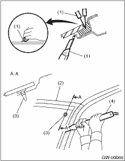
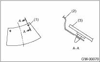
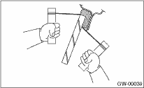

1. WHEN USING WINDSHIELD GLASS KNIFE
1. Remove the cowl panel. 
2. Remove the windshield glass molding.
3. Tape the body side of the circumference of windshield glass for protection.
4. Apply sufficient amount of soapy water to the adhesive part.
5. Make a cut in the adhesive part using a putty knife so that windshield glass knife can be inserted easily.
6. Insert the windshield glass knife into the adhesive.
7. While holding the knife edge and windshield glass edge at a right angle, move the windshield glass knife parallel to the windshield glass edge along the surface and edge of windshield glass to cut the adhesive.
NOTE:
• Do not twist the windshield glass knife.
• Cutting of adhesive part shall be started with wider gap between windshield glass and body.
• Because the locating pins are bonded to the corners of glass, use piano wire to cut the pin.
8. For model with wiper deicer, detach the front pillar trim, then disconnect the harness connector.

|
(1) |
Putty knife |
|
(2) |
Tape for protection |
|
(3) |
Locating pin |
|
(4) |
Windshield glass knife |

|
(1) |
Locating pin |
|
(2) |
Body panel |
|
(3) |
Glass |
1. Remove the cowl panel.
2. Remove the windshield glass molding.
3. Tape the body panel of the circumference of windshield glass for protection.
4. Make a hole in the adhesive part using drill or knife.
5. Pass the piano wire through the hole, and attach securely both the wire ends to pieces of wood.

6. Pull the wire ends alternately to cut off the adhesive part.
CAUTION:
• Do not tightly pull the piano wire against the windshield glass edge.
• Be careful not to damage interior and exterior parts.
• When removal is made with area close to instrument panel, place a protection plate over it. Pay particular attention to the removal.
• Do not cross piano wires. Otherwise they may be cut.